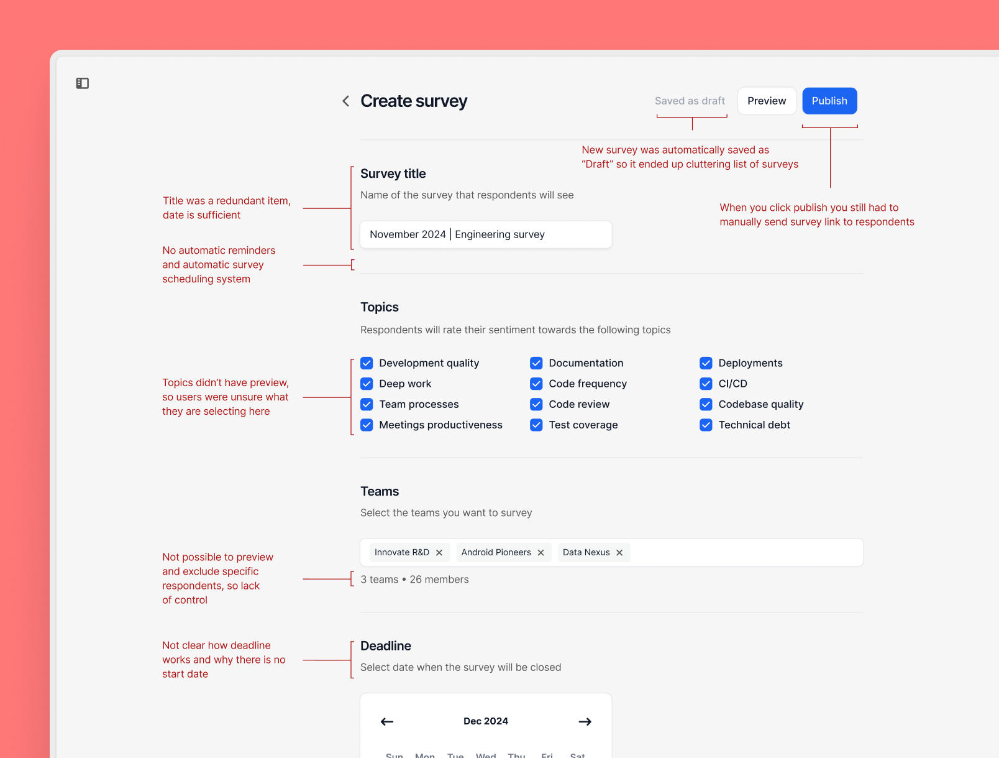
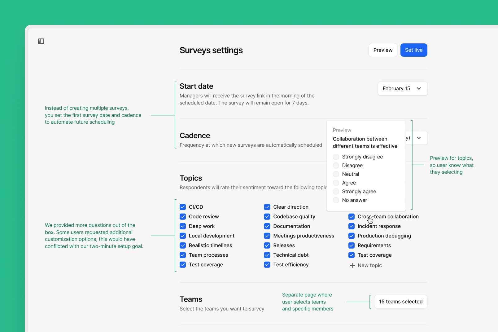
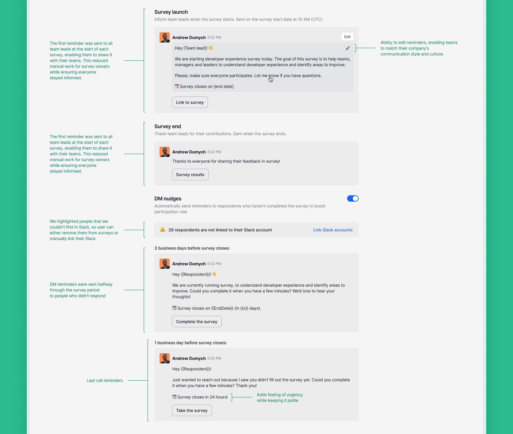
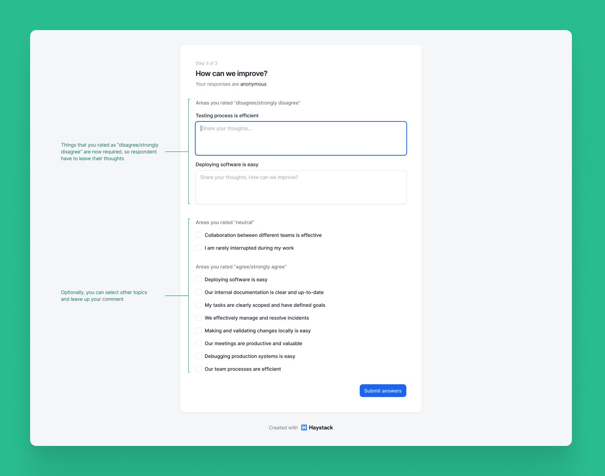
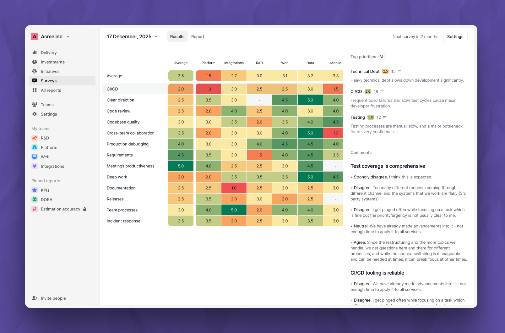
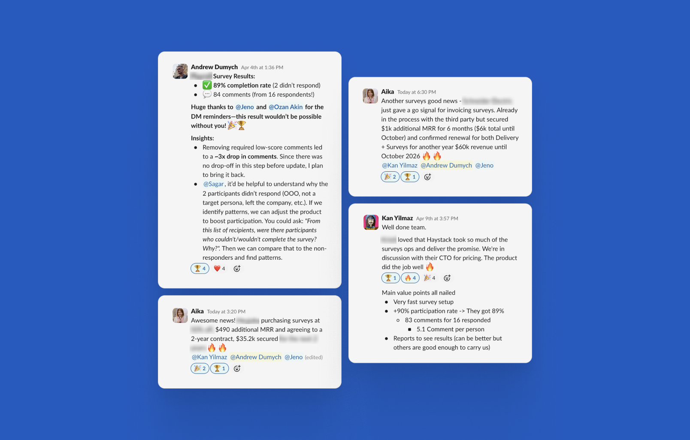

Building Surveys inside Haystack
In response to a fast-growing competitor offering developer experience surveys based on qualitative data, we built and launched a Surveys feature inside Haystack. The goal was to match the competitor's value proposition, defend our market position, and transform a potential threat into an opportunity.






Context
We noticed a new company growing rapidly, about 4x per year, by offering executive-level insights through developer experience surveys. Although they were indirect competitors, they began moving into our domain.
To maintain our strong market position, we needed to deliver our own version of developer experience surveys quickly.
Goals
To succeed, we needed to deliver three key promises:
- 2-Minute Setup. Launch surveys in under 2 minutes with no question writing.
- 90%+ Participation. Reach high response rates without creating work for the survey owner.
- Clear, Accurate Results. Make it obvious what’s working, what’s broken, and how to improve without reading a full report.
Timeline
- Month 1. We began with discovery, designed clickable prototypes, and released to power users.
- Month 2. We paused the project. Interest was validated, but weeks of iteration yielded no closed deals.
- Month 3. We realized we had only made 10% progress on each promise, not truly solved any of them. We doubled down on complete solutions instead of partial MVPs, and that’s when everything clicked.
Promise #1: 2-Minute Setup
Survey creators had to be able to launch surveys in under 2 minutes with no manual setup.
In our first month, we technically delivered the two-minute setup. But customers still felt limited by missing controls, rough edges, and the amount of extra context they needed throughout the flow.
We fixed these issues in our second attempt.
There were tough but necessary product decisions during this update. For example, we required Slack integration before publishing surveys. That reduced our potential user base, but it was essential for achieving the second promise.
Promise #2: 90%+ Participation
Surveys typically suffer from low response rates. Ours had to achieve over 90% without burdening the creator.
Initially, we offered manual survey sharing via link after publishing. We avoided Slack integration to keep the feature accessible to a broader audience, but that decision led to poor results. Participation rates landed around 30–60%, and owners still had to chase responses manually.
To fix this, we restricted the feature to Slack-only. With Slack integration, we could automatically nudge respondents via DM on behalf of the person who launched the survey. It felt personal, added urgency, and drove much better behavior.
As a result, participation rates jumped from roughly 40% to 75–92%, depending on the team.
Promise #3: Clear, Accurate, and Valuable Results
To make this promise real, we had to improve three things.
Clear
This meant the UX had to be simple and intuitive. We mostly achieved this in the first attempt.
Accurate
Questions needed to be research-backed, distinct, and well-formulated.
In the next iteration, we refined the question set using real survey data and guidance from psychometric experts. We had noticed respondents often placed comments under the wrong topics because of overlap or ambiguity.
For example, a statement like We follow development best practices
was too
vague, while Our CI/CD tooling is fast and reliable
mixed two separate
concepts into one. We rewrote these prompts to be more precise.
Valuable
The feature needed to encourage respondents to share their concerns and suggestions, not just click through scores.
Our first version simply included comment fields alongside answers. It looked clean and usable, but it produced weak qualitative data: only 0.5 comments per respondent.
In the next iteration, we separated ratings and comments into distinct steps and added clear messaging
about why feedback matters. We also made comments mandatory for any
Strongly disagree
responses.
I was concerned that this extra step might reduce completion rates, but we saw zero drop-off. Once participants started the survey, they stayed committed to finishing it.
As a result, the average comment rate increased to 4.6 comments per respondent.
We paired that stronger qualitative data with a clearer results view, making it easier to spot the top problem areas across teams and read the comments behind each score.
Results
- ~$30K+ MRR generated in the first month
- Two enterprise clients saved from churn by reactivating with Surveys
Product decisions that mattered
- Slack-only. Risky choice, but essential to hit 90%+ completion with DM nudges.
- Required comments step. Placed at the end of the survey to avoid early drop-off and ended up performing better than expected.
Key takeaways
- Details are everything. Anyone can build a survey tool. What matters is how it fits into the user’s real-world workflow.
- Uncomfortable decisions often pay off. Limiting Slack and enforcing comments both felt risky, but they worked.
- Push through uncertainty. Our biggest mistake was pausing mid-way out of self-doubt. Once we resumed, we moved fast and shipped something valuable.
- Regularly review and realign with your high-level goals. When stuck, step back, breathe, and verify whether you’re making real progress against the original promises.